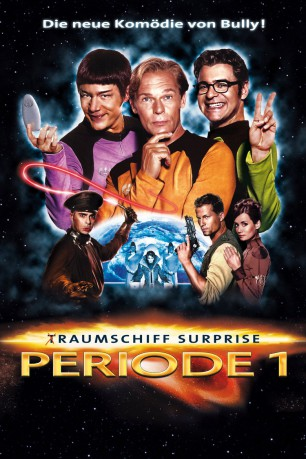

#911 (T)Raumschiff Surprise - Periode 1
 gesehen am 07.08.2015
gesehen am 07.08.2015
 
 IMDB-Wertung: 5.4 / 10
IMDB-Wertung: 5.4 / 10  Metascore: 0
Metascore: 0 
Wir schreiben das Jahr 2054; die Menschheit hat inzwischen den Roten Planeten besiedelt. Etwa 250 Jahre später, dankt man es ihr schlecht, indem die ehemaligen Kolonisten die Erde ins Visier nehmen und deren Bewohner zu vernichten drohen. Es gibt wohl nur eine einzige Hoffnung: Die Besatzung des (T)Raumschiffs "Surprise". Angeführt von Mr. Spuck, Captain Kork und Schrotty. Die Rettung der Welt liegt allein in ihren Händen...
Jahr: 2004
Dauer: 87 Minuten
FSK: 6
Land: Deutschland Studio: Constantin FilmTonspuren:
Untertitel:
Auflösung: 720p (1280x544) Größe: 4474 MB
Genre: Komödie, Sci-Fi
Regisseur:  Michael Herbig
Michael Herbig
Drehbuch: Michael Herbig, Alfons Biedermann, Rick Kavanian
Soundtrack: Ralf Wengenmayr
Darsteller:
 Michael Herbig als Brigitte Spuck / Abahachi / H2O2 / Winnetouch
Michael Herbig als Brigitte Spuck / Abahachi / H2O2 / Winnetouch Rick Kavanian als Jens Maul / Schrotty / Pulle / Putzmann, Stimme / Zeitungsvoiceover / Santa Maria-Ansager
Rick Kavanian als Jens Maul / Schrotty / Pulle / Putzmann, Stimme / Zeitungsvoiceover / Santa Maria-Ansager Til Schweiger als Rock Fertig Aus
Til Schweiger als Rock Fertig Aus Sky du Mont als William der Letzte / Santa Maria
Sky du Mont als William der Letzte / Santa Maria Reiner Schöne als Senator Bean
Reiner Schöne als Senator Bean Waldemar Kobus als Hofwache
Waldemar Kobus als Hofwache- Errol Trotman-Harewood als General Baby
- Stephen Sikder als (uncredited
 Christian Tramitz als Käpt'n Kork
Christian Tramitz als Käpt'n Kork Anja Kling als Königin Metapha
Anja Kling als Königin Metapha Hans-Michael Rehberg als Regulator Rogul
Hans-Michael Rehberg als Regulator Rogul- Hans Peter Hallwachs als Konsul Kanon
 Christoph Maria Herbst als Berater von William
Christoph Maria Herbst als Berater von William Siegfried Terpoorten als Jim
Siegfried Terpoorten als Jim Tim Wilde als John
Tim Wilde als John- Herman Van Ulzen als Senator Davis
- Gerd Rigauer als Senator Terry
- Heidrun Bartholomäus als Senatorin Lea
- Sirone Jones als Senator Eric
- Anton Figl als Popowitsch
- Maverick Quek als Mr. Nasi
- Stacia Widmer als Fräulein Bora-Bora
- Edeltraud Schubert als Spendensammler-Oma
- Albee Lesotho als Putzmann
- Olaf Danner als Offizier Internationale Allianz
- Andreas Seifert als Marstruppen-Kommandeur
- Diana Herold als Burgfräulein
- Hans-Jürgen Silbermann als Bürgermeister Roony
- Thorsten Wolf als Bahnhofsvorsteher
 Marc Bischoff als Junger Cowboy
Marc Bischoff als Junger Cowboy- Brigitte Beyeler als Kelly Reisfeld
- Klaus-Peter Grap als Barry Baumfeld
- Conrad F. Geier als Frank B.B. Blickfeld
- Eric Gladhart als Steve W. Zweifeld
- Michael Rossié als (uncredited
- Jumbo Schreiner als Starker Ritter , uncredited
Datei: X:\2004(A-F)\(T)Raumschiff Surprise - Periode 1 (2004, FSK6, 1280x544).mkv seit 17.04.2015
Festplatte: HD 2003-2004-2005(A-F)
 Es gibt insgesamt 39 Filme in der Gruppe '2004(A-F)'
Es gibt insgesamt 39 Filme in der Gruppe '2004(A-F)'